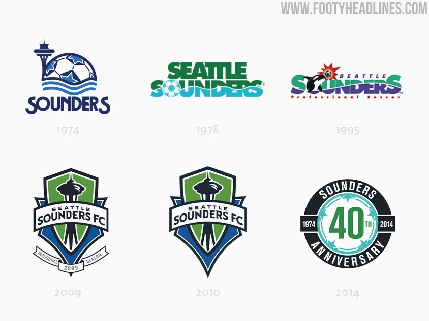

The Seattle Sounders have been around since 1974 across several different leagues. They started as a NASL team until its league dissolved. Then in 2009, they played their first game in MLS.

The Save
The Save from the 2016 MLS Cup Victory. The Video link can be found in the Modern Era.